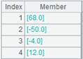

Description:
Create an index table for a table sequence.
Syntax:
T.index(n)
Note:
The function creates an index table of length nbase key. The index table will be cleared if n=0, or when the table sequence’s key is reset.
To create an index table, the records’ primary key values need to be unique, otherwise error will be reported. base key
Parameter:
|
T |
A table sequence with a key. |
|
n |
Index length. Use the default index length when the parameter is absent. |
Option:
|
@s |
Create a multilevel tree-structured index and ignore parameter n if the table sequence’s base key is the serial byte key. |
|
@n |
Create an sequence-number-based index for the table sequence, and ignore parameter n when the option works. Directly use record numbers when table sequence T does not have a sequence number key.
The sequence-number-based index is used to achieve foreign key numberization, which refers to the correspondence between foreign key values of the fact table and sequence numbers of the dimension table records. When P.join() and P.switch() work to perform an association operation, the sequence number key can be absent from the join expression. |
|
@m |
Use parallel processing to create the index. |
Return value:
Table sequence
Example:
|
|
A |
|
|
1 |
=demo.query("select EID,NAME,SALARY from EMPLOYEE where EID<4") |
|
|
2 |
=A1.keys(EID) |
Set EID as A1’s key. |
|
3 |
=A1.index(10) |
Create an index table of length 10 for the table sequence. |
|
4 |
=A1.keys(EID,NAME) |
Reset the key for A1’s table sequence and index table is deleted. |
Create a multilevel tree-structured index:
|
|
A |
|
|
1 |
=3.new(k(~:2):id,~*~:num) |
Create a table sequence where id field is serial byte type. |
|
2 |
=A1.keys(id) |
Set id as A1’s key.
|
|
3 |
=A2.index@s() |
As A1’s base key is serial byte type, use @s option to create a multilevel tree-structured index. |
|
4 |
=A2.index(0) |
As parameter is 0, delete the index table. |

Create an ordinal-number-based index:
|
|
A |
|
|
1 |
=connect("demo").query("SELECT * FROM CITIES") |
Return a table sequence:  |
|
2 |
=connect("demo").query("SELECT * FROM STATECAPITAL") |
Return a table sequence:
|
|
3 |
=A2.index@n() |
Create an ordinal-number index for A2’s table sequence. |
|
4 |
=A1.switch(STATEID,A2) |
A1’s CITIES table acts as the fact table and A3’s STATECAPITAL as the dimension table; the switch() function performs a table join by converting values of STATEID, the CITIES’s key, to corresponding referencing records in STATECAPITAL. The index table on the foreign key is used during the computation, so the sequence number key is omitted from the expression, which is equivalent to A1.switch(STATEID,A2:#). The statement returns the following result set:
|


Related function: